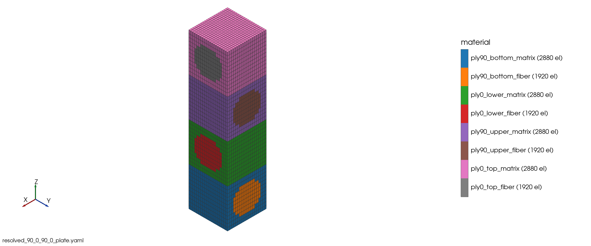

02 UDFRC cross-ply laminate#
Step 1: The fiber-resolved plate cell and its ABD#
Prompt
Now build the plate SG of the same laminate with the fibers resolved: a 1 × 1 × 4 mm 3-D cell, one fiber per layer, 0° fibers along x1 and 90° fibers along x2, periodic in x1 and x2. Give the plate ABD and show the mesh.
CompositesAI


Resolved-fiber 3-D plate-cell mesh#
Built and homogenized the periodic resolved-fiber plate cell. The mesh shown below is \(1\times1\times4\) mm, periodic in \(x_1,x_2\), with 19,200 hex8 elements and \(V_f=0.400\) in every 1 mm ply.
Classical plate law about the mid-plane, with rows/columns
\([e_{11},e_{22},\gamma_{12},\kappa_{11},\kappa_{22},\kappa_{12}]\).
\[\begin{split}\mathbf{ABD}=
\begin{bmatrix}
2.58100{\times}10^5&1.85655{\times}10^4&0&1.00895{\times}10^5&4.50418&0\\
1.85655{\times}10^4&2.58100{\times}10^5&0&-4.50418&-1.00895{\times}10^5&0\\
0&0&1.71314{\times}10^4&0&0&0\\
1.00895{\times}10^5&-4.50418&0&3.31106{\times}10^5&2.38106{\times}10^4&0\\
4.50418&-1.00895{\times}10^5&0&2.38106{\times}10^4&3.31106{\times}10^5&0\\
0&0&0&0&0&2.45985{\times}10^4
\end{bmatrix}\end{split}\]
\(A\): N/mm
\(B\): N
\(D\): N·mm
The nonzero extension–bending coupling reflects the unsymmetric \([90/0/90/0]\) stack.
Compliance:
\[\begin{split}\begin{bmatrix}
4.42440{\times}10^{-6}&-3.18319{\times}10^{-7}&0&-1.34821{\times}10^{-6}&-1.05990{\times}10^{-10}&0\\
-3.18319{\times}10^{-7}&4.42440{\times}10^{-6}&0&1.05990{\times}10^{-10}&1.34821{\times}10^{-6}&0\\
0&0&5.83725{\times}10^{-5}&0&0&0\\
-1.34821{\times}10^{-6}&0&0&3.44884{\times}10^{-6}&-2.47964{\times}10^{-7}&0\\
0&1.34821{\times}10^{-6}&0&-2.47964{\times}10^{-7}&3.44884{\times}10^{-6}&0\\
0&0&0&0&0&4.06529{\times}10^{-5}
\end{bmatrix}\end{split}\]
The law is symmetric and positive definite.